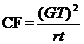

STAM101:: Lecture 16 :: Randomized blocks design – description – layout – analysis – advantages and disadvantages

Randomized Blocks Design (RBD)
When the experimental material is heterogeneous, the experimental material is grouped into homogenous sub-groups called blocks. As each block consists of the entire set of treatments a block is equivalent to a replication.
If the fertility gradient runs in one direction say from north to south or east to west then the blocks are formed in the opposite direction. Such an arrangement of grouping the heterogeneous units into homogenous blocks is known as randomized blocks design. Each block consists of as many experimental units as the number of treatments. The treatments are allocated randomly to the experimental units within each block independently such that each treatment occurs once. The number of blocks is chosen to be equal to the number of replications for the treatments.
The analysis of variance model for RBD is
Yij = m + ti + rj + eij
where
m = the overall mean
ti = the ith treatment effect
rj = the jth replication effect
eij = the error term for ith treatment and jth replication
Analysis of RBD
The results of RBD can be arranged in a two way table according to the replications (blocks) and treatments.
There will be r x t observations in total where r stands for number of replications and t for number of treatments. .
The data are arranged in a two way table form by representing treatments in rows and replications in columns.
Treatment |
Replication |
Total |
||||
|
1 |
2 |
3 |
………… |
r |
|
1 |
y11 |
y12 |
y13 |
………… |
y1r |
T1 |
2 |
y21 |
y22 |
y23 |
………… |
y2r |
T2 |
3 |
y31 |
y32 |
y33 |
………… |
y3r |
T3 |
t |
yt1 |
yt2 |
yt3 |
…………. |
ytr |
Tt |
Total |
R1 |
R2 |
R3 |
|
Rr |
G.T |
In this design the total variance is divided into three sources of variation viz., between replications, between treatments and error

Total SS=TSS=åå y ij 2 – CF
Replication SS=RSS= = åRj2 – CF
Treatments SS=TrSS = åTi2 - CF
Error SS=ESS = Total SS – Replication SS – Treatment SS
The skeleton ANOVA table for RBD with t treatments and r replications
Sources of variation |
d.f. |
SS |
MS |
F Value |
Replication |
r-1 |
RSS |
RMS |
RM S/ EM S |
Treatment |
t-1 |
TrSS |
TrMS |
TrMS/EMS |
Error |
(r-1) (t-1) |
ESS |
EMS |
|
Total |
rt –1 |
TSS |
|
|
CD = SE(d) . t where S.E(d)=
t = critical value of t for a specified level of significance and error degrees of freedom
Based on the CD value the bar chart can be drawn.
From the bar chart conclusion can be written.
Advantages of RBD
The precision is more in RBD. The amount of information obtained in RBD is more as compared to CRD. RBD is more flexible. Statistical analysis is simple and easy. Even if some values are missing, still the analysis can be done by using missing plot technique.
Disadvantages of RBD
When the number of treatments is increased, the block size will increase. If the block size is large maintaining homogeneity is difficult and hence when more number of treatments is present this design may not be suitable.
| Download this lecture as PDF here |